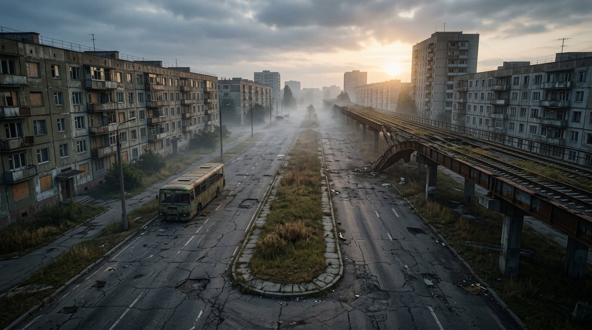

ATLASCartes & extractions
Fiche disponible
De Factory à Terminal : sorties, transits, rencontres, dangers et variantes, comparés profil par profil à partir des données publiées.
Lire : Atlas des cartes